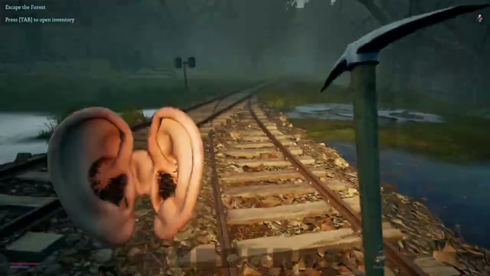
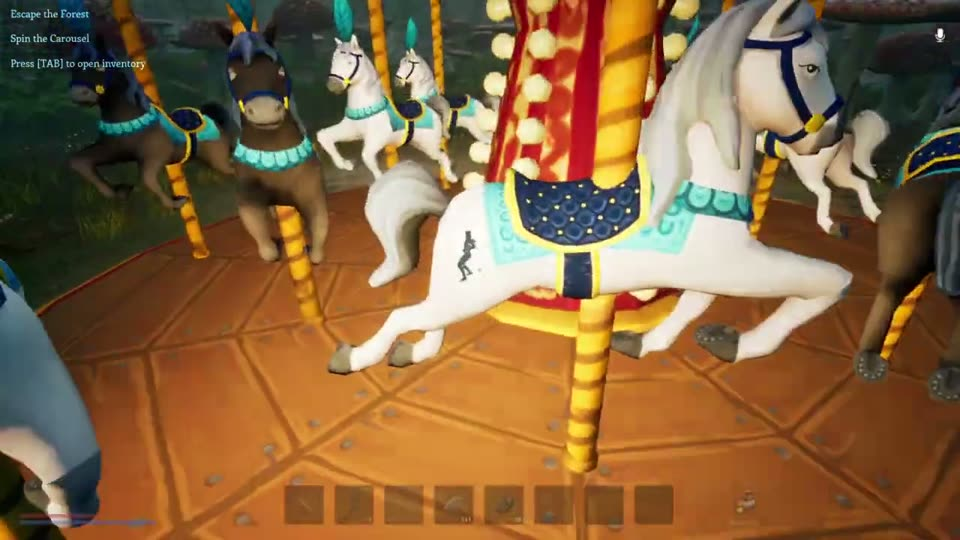
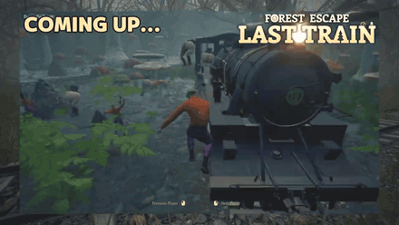

Forest Escape: Last Train review: clowns, flying ears and butts in top hats

Forest Escape: Last Train is a co-op surreal horror game for 1 to 4 players from Frag Lab, published with Two Cakes Studio and in Early Access since July 2026. I played it with three friends.
Our first run ended fast: red exploding monsters hit the train and wiped the whole team. On the second run we got further, past giant stone hands on the tracks and pairs of flying ears, into a maze full of clowns. We needed keys from the maze, and one trick was a rope ladder up to a plank bridge above the maze. "Guys, guys, it's easy, all you have to do is go up."

Past the maze it gets stranger. When I found gold, I announced, "We're going to California for the gold, baby." Then came a tunnel shaped like a giant mouth with a tornado of ears inside and a carousel with a dance puzzle. At the Wheel of Fortune we lost our bets, then won on 10. A lake came next, and a giant eyeball came up and wiped us. Later we ran the train in reverse to go bet again. "We're going all the way back to Gamble Town." We lost all of it.


The end of the video belongs to the walking butts. They're a real enemy in this game: butt cheeks on legs, wearing top hats, that fart green gas at you. I had a couple of my own mods on too, like the banana on my shoulder, and early on I said I might need to take some of them off.
It is rough in Early Access. We hit lag early, and after a game over there is no restart, only the main menu.

Store page: Forest Escape: Last Train on Steam
More co-op horror with friends: Lethal Company as ducks, How to Fish and MECCHA CHAMELEON.